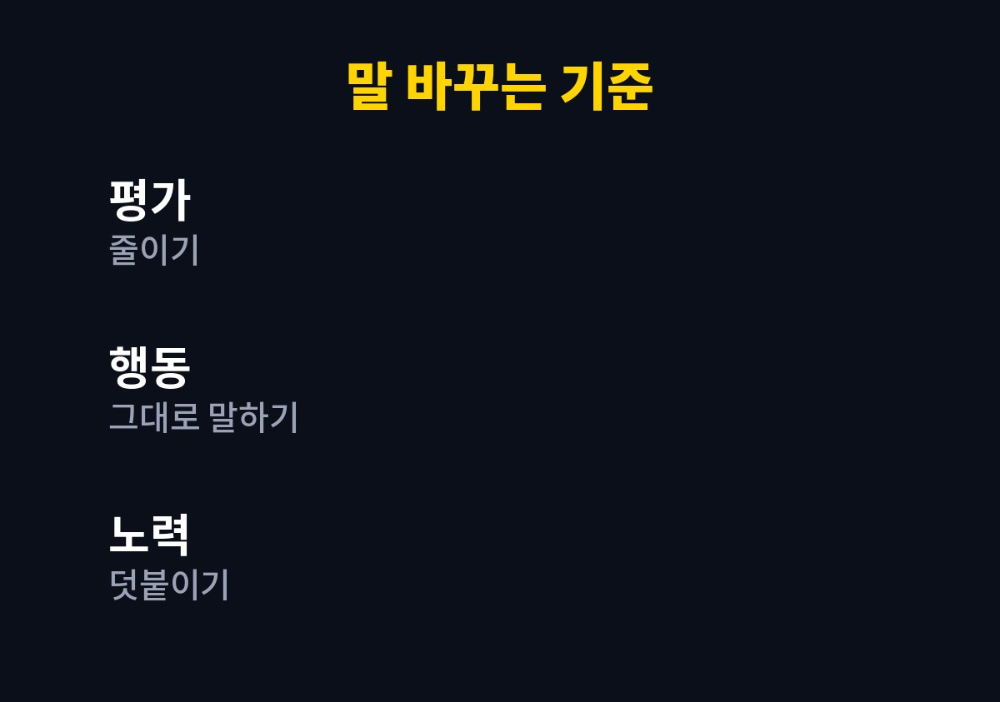
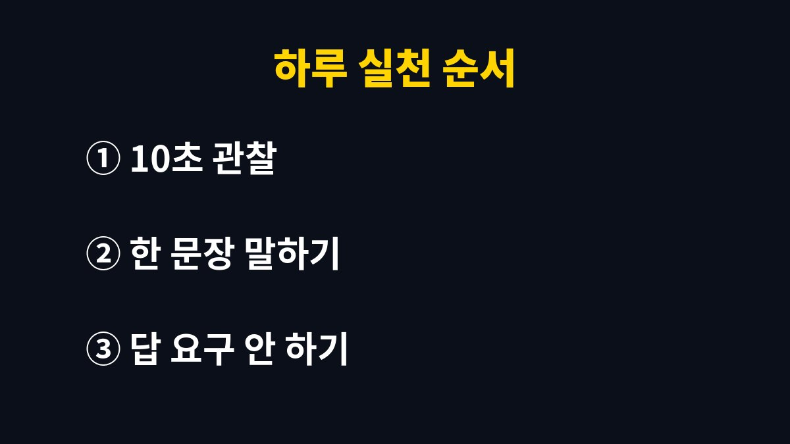

아이 칭찬 방법은 잘했다는 평가를 늘리는 쪽보다 아이가 한 행동을 구체적으로 말해 주는 쪽에 가깝다.
칭찬을 많이 해도 아이가 시큰둥한 집이 있다. 말의 양이 아니라 말의 재료가 달라서 생기는 일인 경우가 많다.
아이 칭찬 방법은 부모마다 고민이 다르다.
칭찬을 아끼면 기가 죽을까 걱정하고, 칭찬을 많이 하면 버릇이 될까 걱정한다.
두 걱정 모두 칭찬의 양을 두고 하는 생각이다.
아래에서는 양 대신 말의 재료를 바꾸는 쪽으로 이야기를 풀어 간다.
시험 점수나 그림 완성도처럼 눈에 보이는 결과에만 반응하면 아이는 결과가 없는 날 말을 걸지 않게 된다.
색칠하다 포기하고 돌아온 아이에게 줄 말이 없어지기 때문이다.
최고다, 천재다 같은 큰 말은 처음엔 기쁘지만 다음에도 그만큼의 말을 기대하게 만든다.
나는 큰 표현을 줄이고 짧은 사실 하나를 말하는 쪽이 아이 표정이 덜 부담스러워 보였다.
칭찬 뒤에 그런데를 붙이면 아이는 앞의 말을 지우고 뒤의 말만 기억한다.
고칠 점은 칭찬과 다른 시간에 따로 말한다.
세 가지 오해는 모두 아이를 평가하는 말에서 시작한다.
평가 대신 관찰을 말에 넣으면 칭찬이 기대나 압박으로 바뀌는 일이 줄어든다.
나도 가장 먼저 바꾼 것이 잘했다는 말을 줄이는 일이었다.
저녁 식탁에서 아이가 먹은 그릇을 싱크대에 가져다 놓은 장면이 있다.
잘했네 하고 지나가면 아이는 무엇을 잘했는지 알 수 없다.
그릇을 직접 가져다 놓았구나, 하고 행동을 그대로 말하면 아이는 그 행동을 다시 떠올린다.
칭찬 문장은 길 필요가 없다. 주어와 행동만 있으면 된다.
아이가 신발을 직접 신었으면 신발을 혼자 신었구나, 한마디로 끝낸다.
말이 짧아야 아이도 부담 없이 듣고, 부모도 매번 이어 가기 쉽다.
| 평소 말 | 바꾼 말 | 달라지는 점 |
|---|---|---|
| 우리 애는 똑똑하다 | 끝까지 다시 풀어 봤구나 | 노력한 과정이 남는다 |
| 최고야 | 색을 세 가지나 섞었네 | 본 것을 구체적으로 확인한다 |
| 착하다 | 동생 신발을 먼저 놓아 줬구나 | 행동이 기억된다 |

표의 오른쪽 칸을 보면 바뀐 말은 모두 아이가 직접 한 일을 가리킨다.
아이는 내가 한 일을 부모가 정확히 보고 있다는 사실에서 더 큰 반응을 보인다.
그 반응이 쌓이면 다음에도 같은 행동을 스스로 하는 쪽으로 이어질 수 있다.
처음 일주일은 하루 한 번도 쉽지 않다.
아침 등원 준비, 저녁 식사 뒤, 잠자리 직전 중 한 시간대만 정해 둔다.
시간을 정하지 않으면 바쁜 날 그냥 잊고 지나간다.

아이가 대답하지 않아도 말이 지나간 것으로 충분하다.
바로 고맙다는 반응이 없는 날이 많고, 그 사이에도 말은 쌓인다.
아이 표정을 살피며 말의 양을 늘리기보다 같은 길이로 꾸준히 이어 간다.
처음에는 아이가 어색해하거나 뜻밖에 말이 줄어들 수 있다.
그럴 때는 바로 효과를 따지지 말고 한 주 정도 같은 방식으로 이어 간다.
아이마다 반응 속도가 다르고, 어떤 아이는 칭찬받는 장면 자체를 쑥스러워한다.
말보다 같이 앉아 있는 시간이 더 잘 통하는 아이도 있다.
공식 지침 하나로 정해진 방식은 없고, 우리 집 아이에게 맞는 속도를 찾는 일이 먼저다.
형제가 있다면 한 아이의 행동을 말할 때 다른 아이와 비교하는 표현은 뺀다.
동생보다 빠르네 같은 말은 칭찬의 모양을 하고 있어도 결국 비교가 된다.
그 아이가 어제와 달라진 점만 말한다.
오늘 저녁에는 아이가 한 행동 하나를 골라 본 그대로 말해 본다.
아이의 행동이나 감정 표현이 걱정스럽게 느껴지면 소아청소년과나 지역 육아종합지원센터와 상담하는 쪽이 빠르다.
※ 2026년 기준 공식 자료를 바탕으로 정리한 일반 정보이며, 아이의 발달이나 건강에 걱정이 있다면 소아청소년과 등 전문가와 상담하길 바란다.